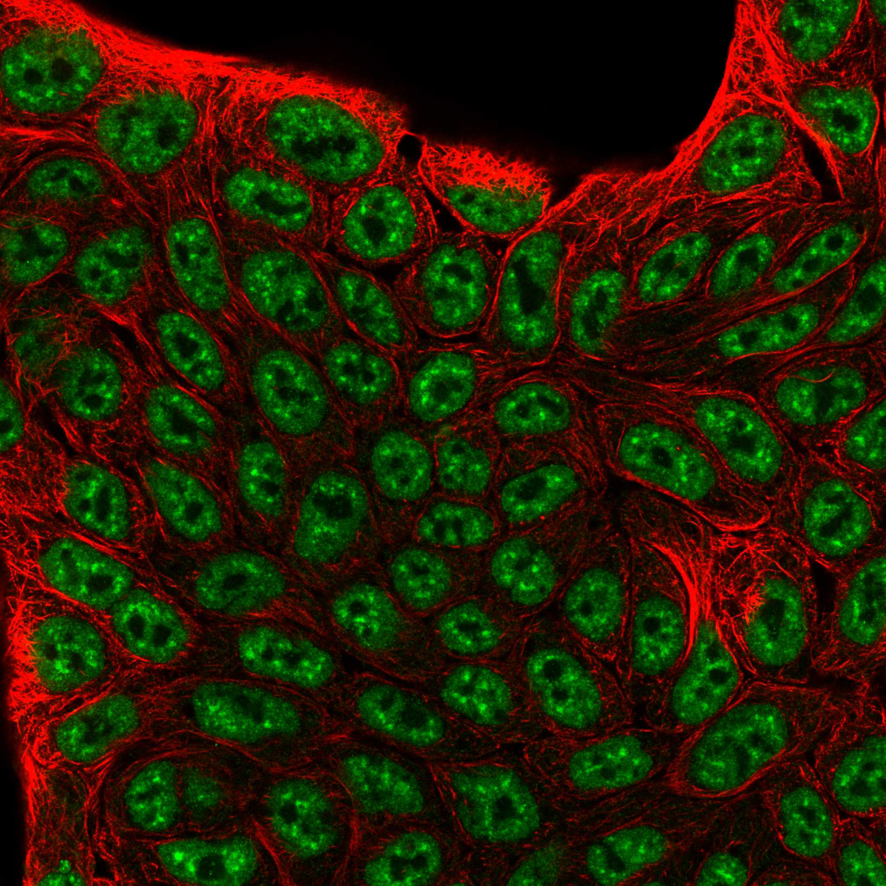

type: protein-evaluation gene: "TRIP12" date: 2026-06-01 tags: [protein-scout, nucleoplasm, evaluation] status: scored ---
TRIP12 核蛋白评估报告
1. 基本信息
| 项目 | 内容 |
|---|---|
| 基因名 / 别名 | TRIP12 / KIAA0045, ULF |
| 蛋白全名 | E3 ubiquitin-protein ligase TRIP12 |
| 蛋白大小 | 2067 aa / 228.5 kDa |
| UniProt ID | Q14669 |
2. 评分总览
| 维度 | 得分 | 新权重 | 加权后 | 关键证据摘要 |
|---|---|---|---|---|
| 核定位特异性 | 8/10 | x4 | 32.0 | UniProt Nucleus nucleoplasm (exp), GO nucleoplasm (IDA)/nuclear speck, HPA Nuclear speckles (Approved) |
| 蛋白大小 | 0/10 | x1 | 0.0 | 2067 aa, 228.5 kDa，超大蛋白 |
| 研究新颖性 | 2/10 | x5 | 10.0 | PubMed strict=92, broad=135 |
| 三维结构 | 5/10 | x3 | 15.0 | AlphaFold pLDDT 66.8；PDB 4 个结构（X-ray domain + EM partial） |
| 调控结构域 | 5/10 | x2 | 10.0 | HECT E3 ligase domain + WWE domain + ARM repeat，泛素化调控 |
| PPI 网络 | 4/10 | x3 | 12.0 | STRING UBR1/UBR2/USP7 强实验，UBE2D1/CDKN2A/RNF168；IntAct + UniProt 中等 |
| 加权总分 | 79/180** | |||
| 互证加分 | +0.0 | |||
| 归一化总分 (÷1.83) | 43.2/100** |
3. 详细分析
3.1 核定位证据
| 来源 | 定位 | 可信度 |
|---|---|---|
| UniProt | Nucleus, nucleoplasm (ECO:0000269, experimental) | 高（exp 证据） |
| GO-CC | nucleoplasm (IDA:UniProtKB), nuclear speck (IDA:HPA), nucleus (HDA:UniProtKB), cytosol (TAS:Reactome) | 高（多来源 IDA） |
| HPA IF | Nuclear speckles (Approved 可靠性) | 中-高 |
| Literature | TRIP12 作为 E3 泛素连接酶在核内调控 RNF168/DNA 损伤应答、降解 CDKN2A/p19ARF | 中-高 |
HPA IF 状态: IF available -- HPA 可靠性 Approved，定位 Nuclear speckles（仅该定位，无附加定位）。

结论: TRIP12 核定位证据充分（UniProt exp + GO IDA + HPA），HPA IF 显示纯核 speckle 分布，无细胞质/膜附加定位。但蛋白巨大（2067 aa/228.5 kDa）。
3.2 结构与数据源
| 指标 | 数值 |
|---|---|
| AlphaFold | AF-Q14669-F1 |
| 平均 pLDDT | 66.8 |
| pLDDT >90 | 25.7% |
| pLDDT 70-90 | 33.2% |
| pLDDT <50 | 34.6% |
| PDB | 4 个结构 (9BKR/9BKS X-ray HECT-WWE domain 1.17-1.40A; 9GKM/9GKN EM C-terminal 478-2067 3.4-3.69A) |
AlphaFold PAE 状态: PAE 已下载。pLDDT 均值 66.8，HECT 催化域 (803-881 aa) 有高分辨 X-ray 结构，C 端 478-2067 有 EM 结构。N 端 1-477 aa 在 PDB 中缺失，预测显示大段无序区。整体为典型的 E3 连接酶多结构域架构。
3.3 研究现状
| 指标 | 数值 |
|---|---|
| PubMed strict (Title/Abstract) | 92 |
| PubMed broad | 135 |
| 别名 | KIAA0045, ULF（未用于 scoring） |
关键文献：
- PMID:40128189: "Combinatorial ubiquitin code degrades deubiquitylation-protected substrates." (Nat Commun, 2025)
- PMID:40473626: "The TRIP12 E3 ligase induces SWI/SNF component BRG1-beta-catenin interaction to promote Wnt signaling." (Nat Commun, 2025) -- 涉及染色质重塑
- PMID:22884692: TRIP12 通过泛素化 RNF168 调控 DNA 损伤染色质应答
- PMID:20208519: TRIP12 介导 p19ARF 的泛素化降解
3.4 PPI 网络（三源综合）
| Partner | Source | Score/Evidence | Relevance |
|---|---|---|---|
| UBR1 | STRING | 0.973 (exp 0.912) | N-end rule E3 ligase |
| UBR2 | STRING | 0.964 (exp 0.912) | N-end rule E3 ligase |
| USP7 | STRING | 0.963 (exp 0.778) | DUB, p53/MDM2 通路 |
| UBE2D1 | STRING | 0.910 (exp 0.835) | E2 泛素结合酶 |
| CDKN2A | STRING | 0.894 (exp 0.785) | TRIP12 ubiquitination substrate |
| MYC | UniProt | 7 experiments | 转录因子，竞争性抑制 TRIP12 |
| NPM1 | UniProt | 2 experiments | 核仁蛋白 |
| RNF168 | IntAct | pull down (PMID:22884692) | DNA 损伤染色质泛素化 |
| USP7 | IntAct | coIP (PMID:19615732) | DUB 互作 |
STRING 互作网络以泛素化系统蛋白为主（UBR1/UBR2 N-end rule 通路，USP7 DUB），实验验证度中高。IntAct 含 CFTR, ESR1, DISC1 等多条互作但部分为筛选级别。UniProt 互作数量有限。
4. 总体评价
TRIP12 是核 speckle 定位的 HECT E3 连接酶，核定位证据扎实且 HPA 定位单一（仅 Nuclear speckles）。主要劣势为蛋白极大（228 kDa）和 PubMed 文献量偏高（92）。其与染色质/DNA 损伤通路的连接（RNF168, beta-catenin/SWI-SNF）提供了一定的转录调控关联，但总体更适合作为核 E3 连接酶而非染色质直接调控因子。
5. 数据来源
- UniProt: https://www.uniprot.org/uniprotkb/Q14669
- AlphaFold: https://alphafold.ebi.ac.uk/entry/Q14669
- PubMed: https://pubmed.ncbi.nlm.nih.gov/?term=TRIP12
- Protein Atlas: https://www.proteinatlas.org/ENSG00000153827-TRIP12
HPA IF 图像已本地嵌入。
PAE 图像暂无数据（未生成本地图片或未可靠获取），结构判断基于AlphaFold pLDDT统计。